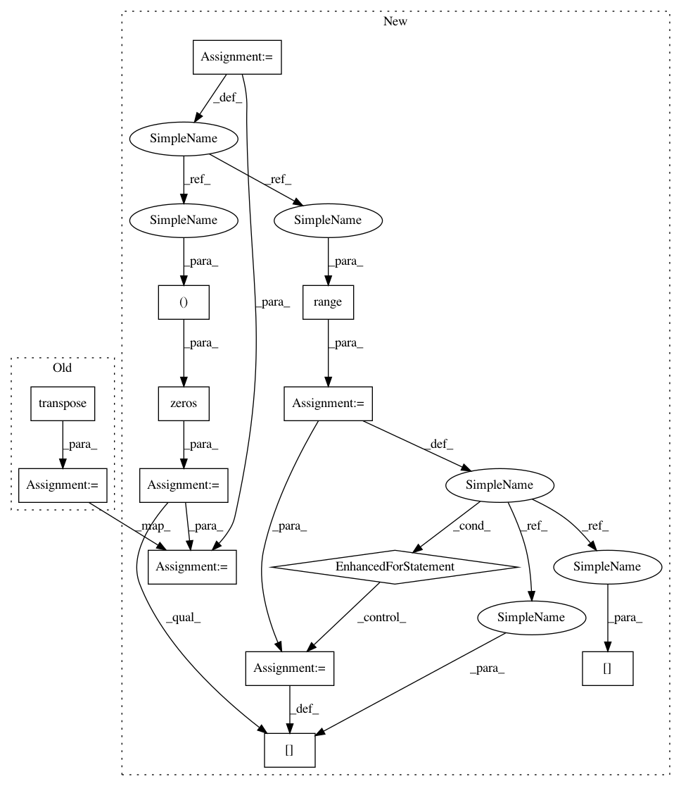

506b234094009d55d326f1ce957f53f15d4b65ee,geomstats/spd_matrices_space.py,,group_exp,#Any#,35
Before Change
[eigenvalues, vectors] = np.linalg.eigh(sym_mat)
diag_exp = np.diag(np.exp(eigenvalues))
exp = np.dot(np.dot(vectors, diag_exp), vectors.transpose())
return(exp)
After Change
sym_mat = make_symmetric(sym_mat)
[eigenvalues, vectors] = np.linalg.eigh(sym_mat)
diag_exp = np.zeros((n_sym_mats, mat_dim, mat_dim))
for i in range(n_sym_mats):
diag_exp[i] = np.diag(np.exp(eigenvalues[i]))
print("diag_exp")
print(diag_exp.shape)
exp = np.matmul(diag_exp, np.transpose(vectors, axes=(0, 2, 1)))
// exp = np.dot(np.dot(vectors, diag_exp), vectors.transpose())
exp = np.matmul(vectors, exp)
print("exp")
print(exp.shape)
In pattern: SUPERPATTERN
Frequency: 3
Non-data size: 13
Instances
Project Name: geomstats/geomstats
Commit Name: 506b234094009d55d326f1ce957f53f15d4b65ee
Time: 2018-02-26
Author: ninamio78@gmail.com
File Name: geomstats/spd_matrices_space.py
Class Name:
Method Name: group_exp
Project Name: geomstats/geomstats
Commit Name: 2e296adb05f62e4821c36b6f42b1470bdb10eaa6
Time: 2018-02-05
Author: ninamio78@gmail.com
File Name: geomstats/special_euclidean_group.py
Class Name: SpecialEuclideanGroup
Method Name: inverse
Project Name: geomstats/geomstats
Commit Name: 506b234094009d55d326f1ce957f53f15d4b65ee
Time: 2018-02-26
Author: ninamio78@gmail.com
File Name: geomstats/spd_matrices_space.py
Class Name:
Method Name: group_log